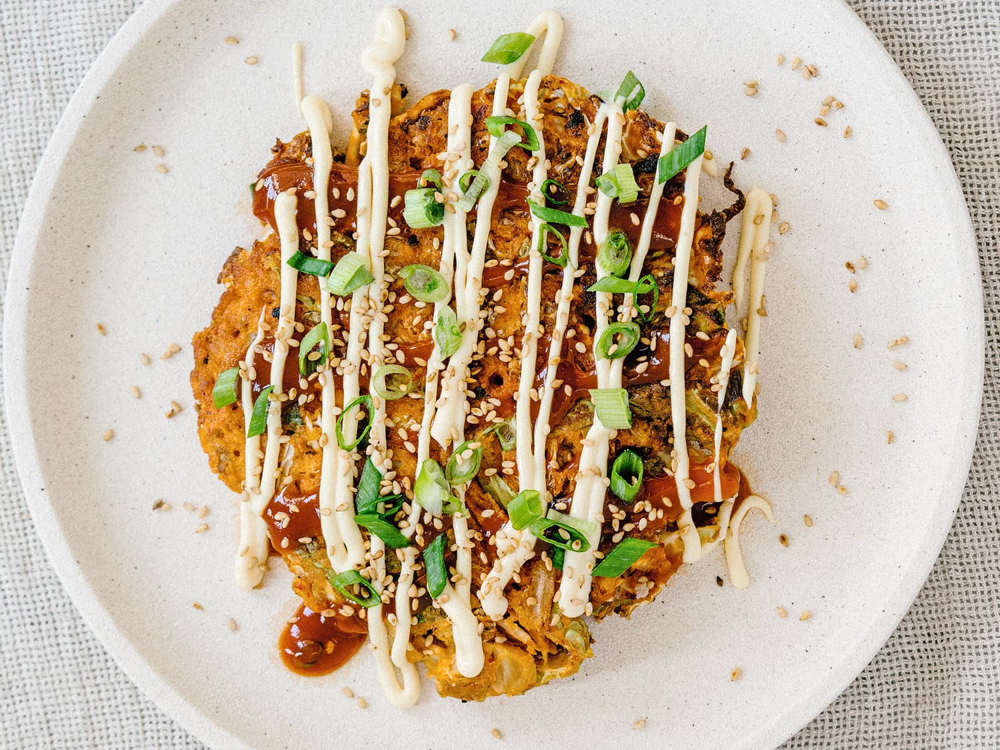

How to cook Okonomiyaki: The savory Japanese Pancake

Ingredients:
Batter
- 1 cup of flour
- 1/4 tsp kosher salt
- 1/4 tsp sugar
- 1/4 tsp baking powder
- 5.6 oz nagaimo
- 3/4 cup dashi
- 4 large eggs
- 1/2 cup tenkasu
- 1/4 cup pickled red ginger *optional*
Other
- 1 head green cabbage
- 1/2 lb sliced pork belly
- neutral oil
Toppings
- okonomiyaki sauce
- japanese mayonnaise
- katsuobushi *dried bonito flakes*
- anori *dried seaweed*
- green onions
- pickled red ginger
How to Prepare:
- In a large bowl, combine 1 cup all-purpose flour (plain flour), ¼ tsp Diamond Crystal kosher salt, ¼ tsp sugar, and ¼ tsp baking powder and mix all together.
- Peel and grate 5.6 oz nagaimo/yamaimo (mountain yam) in a small bowl. Note: The nagaimo may irritate your skin and cause itchiness. Work quickly and rinse your hands immediately after touching the nagaimo. It is very slimy and slippery, so make sure you have a good grip on the nagaimo if you wear kitchen gloves.
- Add the grated nagaimo and ¾ cup dashi (Japanese soup stock) to the bowl.
- Mix it all together until combined. Cover the bowl with plastic wrap and let it rest in the refrigerator for at least one hour. Meanwhile, prepare the okonomiyaki sauce and other ingredients. Tip: Resting the batter relaxes the gluten, improves the flavor, and makes the okonomiyaki fluffier. Some okonomiyaki shops refrigerate the batter overnight.
- Discard the core of 1 head green cabbage and then mince the cabbage leaves.
- Cut ½ lb sliced pork belly in half and set aside.
How to Cook Okonomiyaki:
- After one hour, take out the batter from the refrigerator. Add 4 large eggs (50 g each w/o shell), ½ cup tenkasu/agedama (tempura scraps), and ¼ cup pickled red ginger (beni shoga or kizami beni shoga) to the bowl. Mix until combined.
- Add the minced cabbage to the batter, one-third of it at a time. Mix well before adding the rest.
- In a large pan, heat neutral oil on medium heat. When the frying pan is hot (400ºF or 200ºC), spread the batter in a circle on the pan. We like thicker okonomiyaki (the final thickness is ¾ inches or 2 cm). If you’re new to making okonomiyaki, make it smaller and thinner so it’s easier to flip.
- Place 2–3 slices of pork belly on top of the okonomiyaki and cook covered for 5 minutes.
- When the bottom side is nicely browned, flip it over.
- Gently press the okonomiyaki to fix its shape and keep it together. Cover and cook for another 5 minutes.
- Flip it over one last time and cook uncovered for 2 minutes. If you’re going to cook the next batch, transfer the cooked okonomiyaki to a plate.
Serving:
Serve on individual plates. Spread okonomiyaki sauce on top with a brush or spoon, drizzle with Japanese Kewpie mayonnaise in a zigzag pattern (optional), and sprinkle with katsuobushi (dried bonito flakes). You can also sprinkle with aonori (dried green laver seaweed) and chopped green onions/scallions and top with pickled red ginger (beni shoga or kizami beni shoga) for garnish. Please see the video for this step.
Small Story
Home